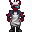
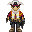
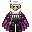

Komodo-class Warship


|
Disabled
This ship is not spawnable by players. It may still be spawn able by admins but for all intents and purposes should be considered unplayable under normal circumstances. |
| Short Name: | Komodo-class |
| Manufacturer: | Unknown |
| Faction: | Unspecified (Prefix: ISV) |
| Crew Size: | 10 |
| Size: | Large |
| Tags: | RP Focus, Combat, Engineering |
| Buyable: | No |
An ICW-era design, the Komodo is a dedicated warship operated by the Gorlex Marauders. Contemporaries of the legendary Starfury-class, Komodos were the backbone of Gorlex and ACLF fleets during the ICW, and saw significant combat service – not always to a tragic end like their Cybersun companions. Contemporary examples often still bear the scars of ICW-period combat, and the dire financial straits of most Gorlex splinter factions means many of those survivors are in a state of poor repair. Despite the stresses of age, they remain capable ships, and often still have the heavier armament associated with their ICW deployments in storage.
| Preview | Name | Officer | Slots |
|---|---|---|---|
.png) |
Captain | Yes | 1 |
.png) |
Sergeant | Yes | 1 |
| Bridge Officer | Yes | 1 | |
|  | Medic | No | 1 |
|  | Mechanic | No | 1 |
|  | Trooper | No | 3 |
.png) |
Deck Assistant | No | 2 |
Overview
The Komodo-class is the combat vessel of choice for the Gorlex Hardliners. One of the designs still around from the war, remaining models are often undermanned and due to be scrapped, but still faithfully serve the Syndicate.
Gameplay
Before we move on with this section:
YOU ARE NOT PIRATES.
This ship is infamous for having weaponry in a military style vessel as the main selling point. It's more or less the most armed Syndicate ship that a player can spawn. Naturally, you're very specialized at knocking out fauna, and other ships if the need arises, but the average captain tends to completely throw roleplay standards out the window. You are not allowed to attack anyone unprovoked. Don't be an asshole.
As a Crewmember:
Listen to your Sergeant, your Captain and your Bridge Officer. If no briefing has been held, report to an officer to get a task assigned. If you're an engineer, make sure the engines are fueled.
As an Officer:
If you're the Captain, think of a gimmick. Seriously. You're not going to be shooting players 95% of the time, so think of other stuff:
- A Syndicate-ran firing range.
- A Hardliner bootcamp for training your recruits.
- Running as hired bodyguards for other Syndicate ships.
If you're the Sergeant, make sure your troops are kept busy in the ship during downtimes. Run weapon inspections, hold briefings and drills. During deployments, assign battle buddies, and keep close tabs on each crewmember's tasks.